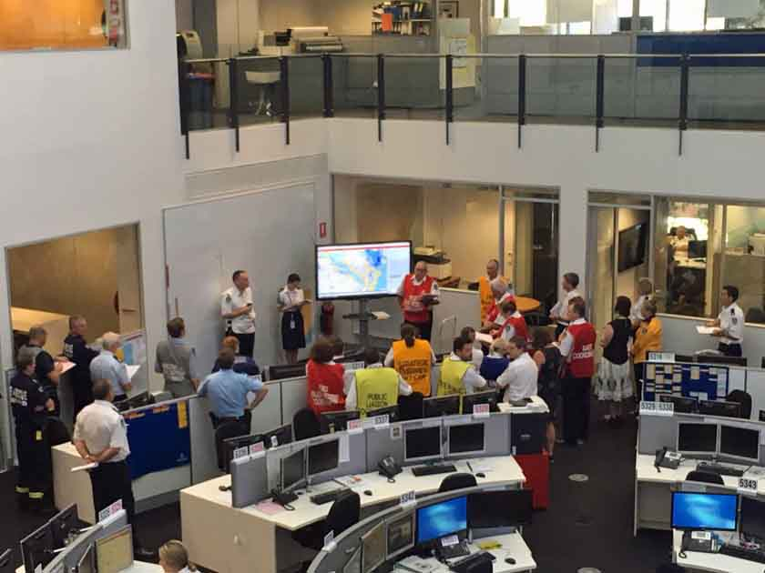
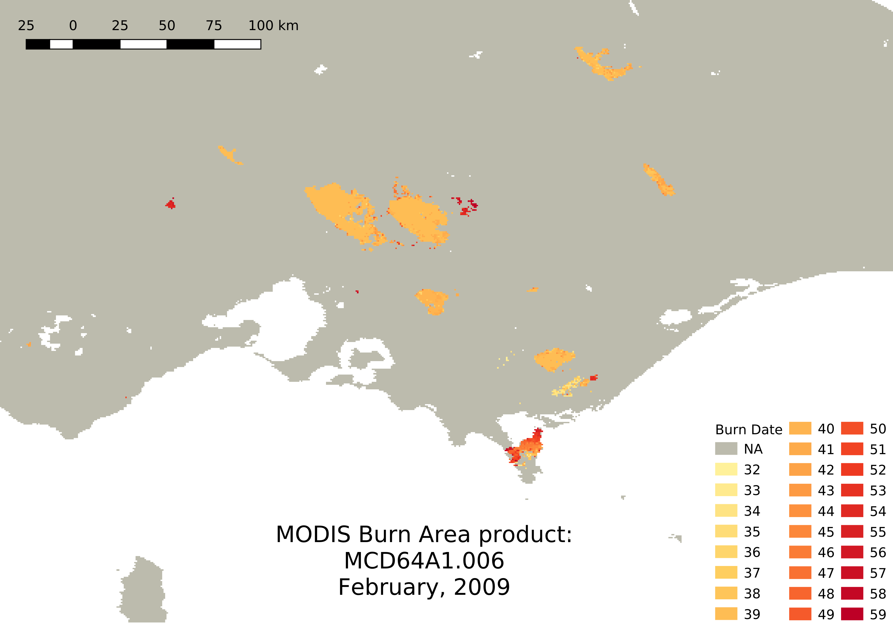

A wide view over Remote Sensing for Fire Mapping
Department of Earth Observation Sciences,
Faculty of Geo-Information Science and Earth Observation
University of Twente
Workshop On Stochastic Mapping Of Bushfires
Enschede, 29-30/01/18
How do we see fire from space?
Wildfire in Pilliga National Park, New South Wales, Australia. Jan 18, 2018.
Copernicus Sentinel 2B - True color composition and SWIR band.
Source:
Sentinel-hub EO browser
How do we see fire from space?
Wildfire in Pilliga National Park, New South Wales, Australia. Jan 23, 2018.
Copernicus Sentinel 2B - SWIR band.
Source:
Sentinel-hub EO browser
Presentation Overview
- Basics of RS for fire detection and mapping
- Remote sensing of active fires (AF)
- Remote sensing of burned areas (BA)
- Spectral indices and burn severity
- Online monitoring and forecast systems
- Latest developments in burned area mapping
Remote sensing for fire detection and mapping
- monitor smoke plumes,
- monitor flaming and smouldering fire locations and timing,
- monitor/estimate the extent of fire-affected areas,
- characterize various fire properties.
Fire is a disturbance factor and an agent of environmental change with local to regional impacts on land use, productivity, carrying capacity and biodiversity, and regional to global impacts on hydrological, biogeochemical and atmospheric processes.
Space-borne sensors provide a unique perspective to monitor and study the global distribution and characteristics of fire. Data from RS have been used to:

Remote sensing for fire detection and mapping
In the early days...
- satellite fire maps were obtained by visual photo-interpretation techniques (highly time consuming and expensive)
Nowadays...
- satellite fire maps are more usually generated automatically (through science algorithms and digital image processing software)
- users of satellite fire information (resource managers, scientists and policy makers) increasingly expect systematically generated, well-characterized satellite fire products to be available online
Remote sensing for fire detection and mapping
Only cost-effective source of information for mapping AF and BA from regional/national up to global scale.
Only source of information for large area/global studies, for multi-temporal analyses and for areas where ground data are lacking or are not publicly available.
Remote sensing for fire detection and mapping
What does a sensor need to detect fire and map burned areas?
- It should measure reflected or emitted electromagnetic radiation at certain wavelengths, especially MIR/TIR (for AF detection) and NIR + SWIR (for BA mapping)
- It should have short revisit time and (moderate/high) spatial resolution
Remote sensing for fire detection and mapping
2 main approaches:
- thermal contrast of active fires with regards to the surrounding background
- reflectance changes caused by burning effects (changing of leaf and soil colour, leaf losses, char background, ash, etc.)
Hybrid approach
Spectral signatures of burned vs unburned areas

Spectral signatures of burned vs unburned areas
Spectral signatures of burned vs unburned areas
Satellite Remote Sensing of fire
- Smoke
- Flaming and smouldering fires: Active Fires (AF)
- Fire affected areas: Burned Areas (BA)
- Fire characteristics: Fire Regime
Smoke
- Smoke might obscure the detection/mapping of fire in VIS and parts of the IR spectrum
- Smoke plume and smoke dispersion info is needed for air quality & public health applications
- There are algorithms to detect smoke and separate it from clouds
Left: True color, Right: False color composition. Source: Sentinel-hub EO browser.
Active Fires
- AF are rather easily detected with MIR and TIR bands (evident in the VIS if fire size is large and energy is high)
- The information about AF, i.e. location, date and time, is basic for numerous applications including fire management, fire suppression and early warning for fires in the vicinity of critical infrastructures
- AF detections from polar-orbiting satellites undersample the temporal dynamics of fire (satellite overpass time and clouds) and the spatial extent of BA where the fire progresses rapidly across the landscape
Active Fires
Satellites used for AF detection
- NOAA - AVHRR
- NOAA - GOES
- METEOSAT
- VIRS - TRMM
- ATSR
- MODIS - Terra & Aqua
- VIIRS - Suomi NPP
Active Fires
Algorithms for AF detection
- Simple:
- Empirical thresholds based on MIR or TIR bands (day and/or night satellite overpasses)
- More complex:
- Contextual algorithms that use thresholds in MIR/TIR bands and rejection of false positives according to bright temperature of neighbour pixels (MODIS AF product)
- Provide more reliable and consistent AF monitoring
Active Fires
Operative products
- MODIS: MCD14ML (1000 m, daily, 2001-present, Day & Night)
- VIIRS: VNP14IMGTDL_NRT (375 m, daily, 2012-present, Day & Night)
- AVHRR: FIMMA (1100 m, daily, only USA)
Burned Area
- Support for numerous research and operational applications in resource management, environmental assessment and post-fire remediation.
- Used to estimate gas emissions, needed for climate models and projections of climate change.
Fires produce black char and ashes (complete combustion)
Changes are non-permanent, they will last from weeks to years according to conditions in the area (wind, rain, vegetation re-growth)
Burned Area
Algorithms for BA mapping
- Visual interpretation and application of empirical spectral thresholds to individual satellite bands (esp. pre- and post-fire)
- Spectral band ratios, esp. those based on NIR (~0.8 μm) and SWIR (~1.6-2.2 μm) reflectance (best differenciation)
- Automated methods
Burned Area
Algorithms for BA mapping
- Automated methods
- definition of the magnitude of spectral change is critical
- multi-temporal data and a change detection scheme to take advantage of the "temporal persistency" of fire effects
- challenge is to map only the fire-affected area and not other changes: flooding, snow melt, rapid vegetation senescence, cloud shadows and ploughing of agricultural fields
- several methods used at different scales applied to either multi-temporal or single images: supervised classifications (maximum likelihood, decision trees, random forest, SVM and neural networks), segmentation/OBIA, linear transformations (tasselled cap and PCA), spectral unmixing techniques, and logistic regression models
Burned Area
Algorithms for BA mapping in operative products
First BA products:
- Search for a drop in SWIR & increase in TIR plus multi-temporal criteria to reject false positives (NOAA-AVHRR, ATSR, MCD45)
Most recent BA products:
- Hybrid algorithms that use the AF to define the magnitude of spectral change associated with fire, so AF are used as seeds and BA are then mapped by contextual algorithms such as growing regions (MCD64, Fire_CCI)
Burned Area
Operative products
Links to BA products' websites: GLOBSCAR, GLOBCARBON, GBA2000, L3JRC, MCD45A1, MCD64A1, ESA Fire_CCI, GFED, GBS.
Burned Area
Operative products
Burned Area
Application of BA products
- Fire hazard assessment for ecosystem management (daily products, finer spatial resolution for better delineation of fire contours and long time series for better understanding of fire regime)
- Early warning fire alert systems and survey (better timing and low omission errors)
- Atmospheric chemistry
- Biogeochemical models
- Dynamic global vegetation models
Burned Area
Accuracy of BA products
- Limitations to detect small fires (thresholds observed range between 100 and 120 ha)
- Limitations to detect low intensity fires (common in savannas, agricultural fields and shrublands)
- Accuracies can fall to 40% in some biomes or when using coarser resolution sensors
- Issues of temporal reporting
Fire regime
Fire regime is described by:
- Frequency
- Seasonality
- Spread pattern
- Intensity
- Fuel consumption
- Severity
Spectral Indices
Based on the differences in the spectral signature of burned and unburned vegetation
- Burned Area Index: BAI = 1 / (NIR - 0.06)^2 + (RED - 0.1)^2
- Global Environmental Monitoring Index: GEMI = η (1 − 0.25 η) - (RED - 0.125) / (1 - RED)
- Burned Area Index Modified: BAIM = 1 / ((NIR - 0.05)^2 + (SWIR - 0.2)^2)
- Normalized Burned Ratio: NBR = (NIR - SWIR) / (NIR + SWIR)
- Mid-Infrared Burned Index: MIRBI = 10 * SWIRL - 9.8 * SWIRS + 2
NDVI, EVI and LST are also used, as well as combinations such as LST/EVI or d(LST/EVI)
References:
η = (2 * (NIR^2 - RED^2) + 1.5 NIR + 0.5 RED) / (NIR + RED + 0.5)
RED: Red reflectance
NIR: Near Read Infrared reflectance
SWIR: might be SWIRS or SWIRL
SWIRS: Short Wave Infrared Short reflectance (~ 1.6 μm)
SWIRL: Short Wave Infrared Long reflectance (~ 2.2 μm)
Indices for Landsat TM/ETM+ & Landsat 8
Spectral Indices for Sentinel 2
Indices based on red-edge bands from S2 resulted better qualified for BA mapping and burn severity discrimination
Source: Fernandez-Manso et al. (2016)
Burn Severity
Burn severity is of great value in defining emergency areas, especially in those ecosystems dominated by obligate seeders or with high vulnerability to soil erosion. It is also important in the context of post-fire remediation: subsidies, help, tax exemptions.
Severity is estimated with bi-temporal spectral indices considering pre- and post-fire scenes, for example:
- dNBR = NBRpre-fire - NBRpost-fire * 1000
- RdNBR = deltaNBR / sqrt( abs(NBRpre-fire) )
- RNBR = deltaNBR / NBRpre-fire + 1.001
- d(LST/EVI) = LSTpost-fire / EVIpost-fire - LSTpre-fire / EVIpre-fire
- dNBR-EVI = (dNBR - EVI * 1000) - offset
Online AF and BA monitoring and risk forecast systems
Latest developments in BA mapping
New algorithms are being developed and tested in order to produce global BA products at regional/landscape scale:
- Landsat TM/ETM+ and Landsat 8 OLI
- Web Enabled Landsat Data (WELD) for CONUS on a weekly and annual basis & Analysis ready data (ARD) for CONUS, Alaska & Hawai
- Landsat Burned Area Esential Climate Variable (BAECV) for CONUS. Period 1984-2017. (Gradient boosted regression models)
- Merged Landsat + Sentinel 2
- Sentinel (1 and 2)